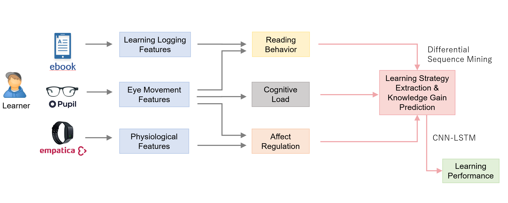

MMLAIR: Multimodal learning analytics in reading
Overview
Understanding learners’ learning strategy in behaviors, cognition, and affection when using learning technologies will help us deep our understanding of the daily education practices and further support learners’ personal development. Meanwhile, by analyzing the relations between learners’ leaning strategy and knowledge gain outcomes, educators and researchers can create more effective and efficient learning environments that promote personalized learning experiences. This work aims to identify students’ learning strategy by differential sequence mining (Kinnebrew et al., 2013) and predict students’ knowledge gain by a deep learning-based approach CNN-LSTM (Mutegeki & Han, 2020) in reading activity using multimodal data. The learner data will be collected simultaneously from an e-book reader named BookRoll, eye-tracking tracker Pupil Core, and wristband Empatica E4. As these time series data come from different sources, they need to be synchronized to enable analysis. For this purpose, a pipeline system will be developed based on an open multi-model recording framework, Lab Streaming Layer (LSL). The results of this work can be used for future educational interventions, such as personalized instruction from educators or recommender system.
Framework
